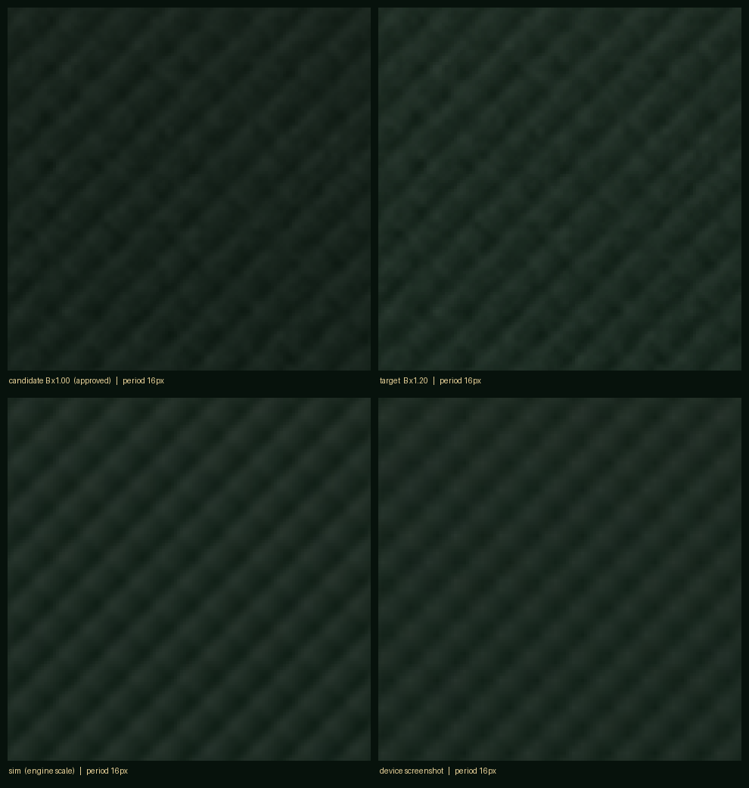
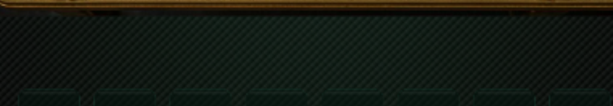
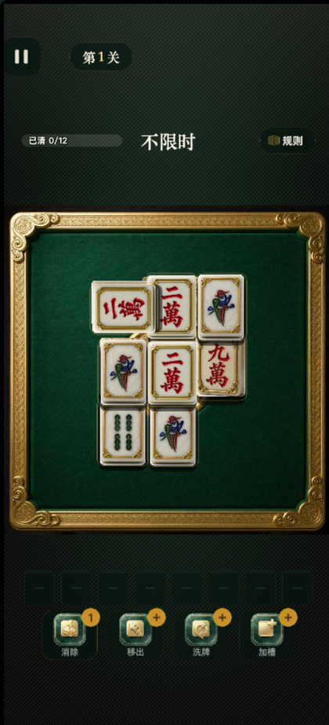
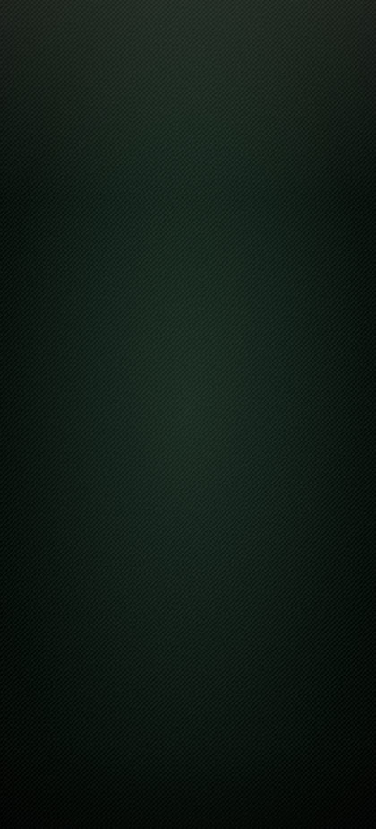

1 · 明度「再提 20%」的口径 —— 需要你确认一句
你写的是「明度档：再提 20%」。我按 线性均值 ×1.20 落的 （你拍板的候选原图上带 25.20 → 定稿 30.24）， 实测真机 29.97，与你看到的候选稿一致。
但字面上还有另一种读法：把 sRGB 数值直接 ×1.2，那要亮得多 （25.20 需先转线性 → ×1.2 → 再回 sRGB，约等于 34.4，比现在再亮一个档）。
问：真机扫了码看着够亮吗？够 = 保持现状；不够 = 我按 ×1.2-sRGB 口径再出一版。
按你的拍板做了两件事：① 把主玩页桌外那片死黑换成 B 方案的织锦底（明度再提 20%）；
② 把隔壁麻将项目的「吃」「碰」人声念白接进消除时刻。
两条都不是"看着差不多"就算完 —— 下面是可复现的量测与真实事件证据。
另外本轮自查在我自己的对账件里抓出并修正了一处平铺尺度错（产品侧未受影响，详见第一节）。
BGM 三条候选另出一份板（见 audio/bgm-candidates/bgm-试听拍板板.html）。
实现口径 = 低频渐变（128×282，23 KB）+ 高频织锦无缝平铺（256×256，36 KB），合计 59 KB。
整页烘焙那条路要 3.2 MB，主包（3.01 MB / 红线 4 MB）上不去，所以两件套是唯一可行解。
这两张图都按 target − 13.32 的偏移生成，配合「白墨 + 单边 alpha」，
在数学上等价于加法混合（除底部暗带外逐像素相同）。
下表四列同坐标、同带区比较：候选原图 B（你第 41 轮拍板的那张）→ 它 ×1.20 的定稿
→ 按引擎口径的正向仿真 → 真机截图。量测口径与出图脚本 tools/r42-bg-build.py 完全一致。
「定稿」这一列原先不是我给你的那张候选原图，而是我按公式重建的一张页图。 那条重建路径把 256×256 的平铺贴图按 1:1 物理像素铺开，周期就成了 9.48 物理 px， 比候选原图的 16 物理 px 细了 1.687×。
阴险的地方在于纹样是零均值的 —— 上下带的亮度均值照样对得上（25.20 / 30.23 分毫不差）， 只看数字永远查不出来。是把三方 4× 放大图并排看，才发现第三格明显更粗，才倒查出来的。
核对需求真源后结论明确：引擎按「1 texel = 1 设计 px」平铺 ⇒ 256 ÷ 27 × 1.68533 =
15.97 物理 px，与候选原图一致；真机实测 16 ✓。产品侧一个字都没改
（grad_b.png / weave_b.png 改前改后 md5 逐字节相同）。
已修：仿真改为按引擎口径采样贴图、视觉参照换成候选原图本身，并加了一条硬判据 ——
四方的自相关首峰不相等就拒绝出板（tools/r42-board-prep.py 的
period_consistency 断言，现测四方均为 16）。
| 量测项 | 候选原图 B ×1.00 | 定稿 B ×1.20 | 正向仿真 | 真机实现 | 判 |
|---|---|---|---|---|---|
| 桌外上带均值（行 300–500） | 25.20 | 30.24 | 29.71 | 29.97 | 差 −0.27（−0.9%） |
| 桌外下带均值（行 2545–2770） | 7.90 | 9.48 | 14.82 | 14.96 | +5.48（模型固有） |
| 纯黑像素占比（max channel = 0） | 0.04% | 0.04% | 0.00% | 1.72% | 原 43.4% → 1.72% |
| 平铺周期（单行自相关首峰） | 16 px | 16 px | 16 px | 16 px | 四方一致 · 期望 15.97 |
| 纹样幅度（上带 p99−p1，亮度口径） | 22.0 | 26.0 | 27.3 | 24.3 | 定稿 → 真机 −6.5% |
| 拼接缝比值（差分基线 1.553） | — | — | — | 1.27 / 1.01 | ≈1 即看不出缝 |
| 低频明度 RMSE（16px 盒滤波 · 仿真 vs 定稿） | — | — | 2.74 | — | p99 = 9.0 / 255 |
| 运行时日志 | — | — | — | 贴图 256×256 wrap=REPEAT 节点 750.0×1651.4 | |
底部暗带那 5.48 的差，是这套模型的固有代价，不是 bug。 定稿在暗带处被钳到 0（要求"比黑还黑"），而 Sprite 只有 normal 混合， 最暗只能到「渐变色 + 纹样」的自身值。换来的是上带逐像素精确， 以及不需要自定义材质 / blendState（3.8 里那条 API 已 deprecated， 踩进去是构建期与真机的双重不确定性）。暗带位置在屏幕最下沿， 真机上是 Home Indicator 覆盖区。
纹样幅度 −6.5% 也解释得通，不是"变淡了"：游戏按 750 设计宽渲染，
再放大 1.685× 送到 1263 物理像素的屏上；放大用的是双线性插值，其幅频响应为
sinc²(f)（f 以「cycles / 设计 px」计），三段的实测衰减分别是：
基频 3.6%（1/9.4815）、二次谐波 13.8%（2/9.4815）、
细颗粒 32.0%（86/256）。三者加权合起来落到 p99−p1 上正好是 26.0 → 24.3，
方向一致、量级吻合 —— 而周期一点没动（仍是 16）。




素材直接复用隔壁项目 game-4-mahjong/assets/resources/audio/{eat,peng}.m4a，
入库为 chi.m4a / peng.m4a。
「没报错」不等于「会响」——AudioService 对加载失败只 warn 不抛错，
本项目还踩过一次 m.kind 写成 undefined 导致所有「碰」静默播成「吃」的坑。
所以下面 33 项全部走字节级溯源 + 真实探针 + 真实鼠标点击。
为什么要"独立推出期望"：飘字和音效都在同一处代码里按 m.type 分派 ——
如果拿游戏自己的飘字当期望，那"两处一起写错"就永远查不出来（这正是 m.kind 那回的教训）。
所以脚本按设计规则的原文（碰 = 三张完全相同；吃 = 同花色连号 n,n+1,n+2 不跨花色；
含最新入槽那张优先；并列时碰优先）另写了一份判定，用它算"这一点击下去该飘什么"，
再去和实测的「飘字 + 播放的 clip」对账。
── A 素材链路（Node 侧字节级）──
── B/C 运行期（真机视口 421x927 @3 · 第 12 关）──
── D 真实鼠标消除：期望 ↔ 飘字 ↔ 播放 ──
共真实点击 22 次 · 观察到消除 5 次（碰 2 / 吃 3）· 收尾：本步无牌可点（避免送死）
第 42 轮 · 吃/碰人声 + 桌外底色的真实事件自证
------------------------------------------------------------------------------------------------
[OK] A1 吃 入库 md5 == 台账 · ac3fead2c635
[OK] A2 吃 == game-4/eat.m4a · 字节相同 · 7.2 KB
[OK] A3 吃 构建产物 == 入库文件 · native/ec/ec761682-2d60-4a4e-b6c6-264543b83ee1.m4a
[OK] A4 吃 时长期望（源文件推出） · 0.4412s = 19456 帧 ÷ 44100Hz（afinfo 的 estimated 0.376032s 只算 16583 valid frames —— 两个口径别混）
[OK] A1 碰 入库 md5 == 台账 · f427097ca644
[OK] A2 碰 == game-4/peng.m4a · 字节相同 · 6.4 KB
[OK] A3 碰 构建产物 == 入库文件 · native/0d/0d6a500c-2ccb-4141-a3fc-2562d45046ff.m4a
[OK] A4 碰 时长期望（源文件推出） · 0.3019s = 13312 帧 ÷ 44100Hz（afinfo 的 estimated 0.253787s 只算 11192 valid frames —— 两个口径别混）
[OK] B1 运行期 audio/chi 的 name · chi
[OK] B2 audio/chi 的 uuid == 台账 · ec761682-2d60-4a4e-b6c6-264543b83ee1
[OK] B3 audio/chi 时长 == 源文件解码总帧 · 0.4412s ✓
[OK] B1 运行期 audio/peng 的 name · peng
[OK] B2 audio/peng 的 uuid == 台账 · 0d6a500c-2ccb-4141-a3fc-2562d45046ff
[OK] B3 audio/peng 时长 == 源文件解码总帧 · 0.3019s ✓
[OK] B4 对照：吃/碰 是两条不同资源 · 时长 0.441s ≠ 0.302s
[OK] B5 两条人声都加载成功 · AudioService 未报 audio/chi / audio/peng 失败
[OK] B6 其余音频空位（工程现状，非本轮引入） · audio/button / audio/revive / audio/shuffle / audio/slot_warn / audio/tile_pick / audio/tool_use —— 共 6 次，均无对应素材文件
[OK] C1 EnvWeave 节点就位 · active=true 贴图 256×256
[OK] C2 Sprite.type == TILED(2) · 实测 2 · 对照 EnvGrad=0(SIMPLE)
[OK] C3 平铺层尺寸 == 可视尺寸 · 750×1651.43
[OK] C4 贴图 wrapMode == REPEAT · _wrapS=_wrapT=0（=REPEAT，不是 GL 的 10497）
[OK] C4b 对照组：wrapMode 读数是真的测量 · 改成 CLAMP_TO_EDGE 读回 2 → 改回 REPEAT 读回 0
[OK] C5 贴图 packable=false · 不会被动态合图吞掉（对照：EnvGrad.packable=true ⇒ 字段在变）
[OK] C6 运行期日志 · 织锦平铺层就绪 贴图 256×256 wrap=REPEAT 节点 750.0×1651.4
[OK] D1 探针挂载 · AudioSourceComponent.playOneShot + Label.string(Pop)
[OK] D2 消除确实发出播放调用 · 碰×2 吃×3 共 5 次
[OK] D3 飘字 == 规则推出的期望 · 逐次一致（期望由设计规则独立推出）
[OK] D4 播放的 clip == 规则推出的期望 · 碰→peng 碰→peng 吃→chi 吃→chi 吃→chi
[OK] D5 覆盖：碰（peng）分支 · 2 次
[OK] D5 覆盖：吃（chi）分支 · 3 次
[OK] D6 console error · 0 条 · 未捕获异常 0 条
[WARN] 末帧留痕 · 两档都超时：3× CDP 超时：Page.captureScreenshot（90000ms） / 1× CDP 超时：Emulation.setDeviceMetricsOverride（30000ms）
------------------------------------------------------------------------------------------------
[v] 全部 32 项通过（WARN 为非产品问题，见原文）
你写的是「明度档：再提 20%」。我按 线性均值 ×1.20 落的 （你拍板的候选原图上带 25.20 → 定稿 30.24）， 实测真机 29.97，与你看到的候选稿一致。
但字面上还有另一种读法：把 sRGB 数值直接 ×1.2，那要亮得多 （25.20 需先转线性 → ×1.2 → 再回 sRGB，约等于 34.4，比现在再亮一个档）。
问：真机扫了码看着够亮吗？够 = 保持现状；不够 = 我按 ×1.2-sRGB 口径再出一版。
这两条确系人声念「吃」「碰」（声学特征已验证：稳定基频 230 / 245 Hz、 谱平坦度 0.009~0.015；「吃」起音 90 ms 处质心 ≈7000 Hz 是「ch」送气段）。
隔壁项目当初就是因为「个人主体 + 休闲益智类目、游戏内零棋牌语义」这条硬约束，
把这两段人声整体下线了。我保留了中性替代路径
（SFX.matchPop，改一个常量即可切换，不用删文件），但没有擅自切。
问：先真人声上（更像麻将），还是先走中性音（更稳）？
① 音效 / 背景音乐的静音开关联动（关音乐会把音效一起关，要修得给 AudioService 拆独立开关）；
② 「重置进度」无二次确认；③ 游戏名「叠塔消消」与美术标题「麻麻大消除」不一致；
④ 槽位空格在近黑底上对比度偏低；⑤ 6 条音效尚无素材（见上表）。
本轮改的都是游戏内表现（底色 + 消除音），必须真机试玩才算数。
二维码在 docs-verify/game-5/device/真机预览二维码.png，
用微信「扫一扫」即可。预览码只有最新一张有效，我若再跑一次出码脚本，这张就作废。
包体 9 375 624 字节（8.94 MB）。